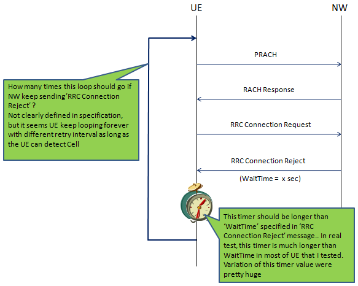
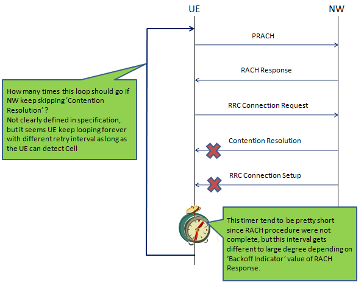
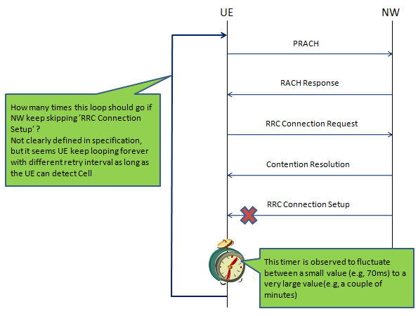
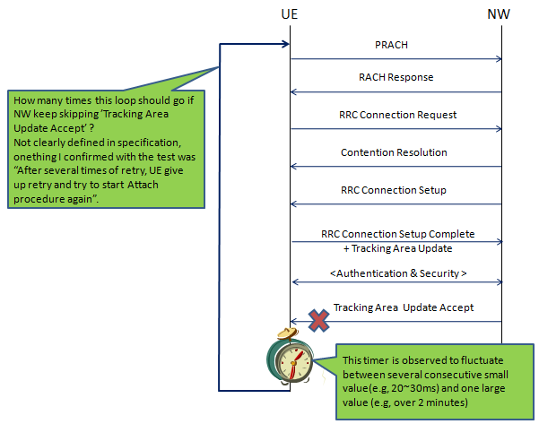

|
LTE Quick Reference Go Back To Index Home : www.sharetechnote.com |
|
|
Retry Test/Negative Test/Reject Test
As far as I understand, 'Retry Test' is not a strict 3GPP terminology, but you may often hear about this test since some of network operator requires this test as an IOT level.
It also seems that many people is using 'Retry Test' interchangeably with 'Negative Test' or 'Reject Test'. Whatever it is called, they all means the same thing (at least similar things)
As the term says, 'Retry Test' is the test in which Network put DUT in a condition where the DUT has to 'retry' 'something'. Then what is the 'something' ? meaning 'In what situation UE has to retry something'. There can be many different cases for this. One of the most typical cases is when UE get some reject message to the message it sent to the network.
One example for this is 'RRC Connection Request' retry and overall sequence is as follows.
i) UE --> NW : 'RRC Connection Request' ii) UE <-- NW : 'RRC Connection Reject'. iii) < UE waits for a certain period of time. UE does not resend 'RRC Connection Request' during this period > iv) UE --> NW : 'RRC Connection Request' (Retry)
It seems that network operators are more interested in step iii). They want to specify this timing as they like and make it sure that UE should not retry during the time frame. I think it is understandable since if UE retry something too often it would generate huge load on the network, but if UE does not retry it too long, it will give the bad user experience.
For most of this kind of test, there a several common things to be clarified (if you are the person who has to develop a test case or write test plan/requirement, you have to have answers to these questions first).
i) What is the trigger for retry ? (Is it an explicit reject message ? or 'absense of response' (Ignoring Request)? or anything else ?) ii) When a DUT has 'Reject' ? or get its request 'ignored', does it have to retry the request ? or simply give up the request right away ? iii) If the DUT is expected to 'retry', does it simply has to send 'request' message again or does it goes even further backward and go through the whole process again ? iv) If it gets rejector or ignored even with the retry, does it have to 'try again' or give up right away ? if it has to retry, how many times it has to retry ?
For some case, you will get those answers from 3GPP specification, but unfortunately there are many cases where they are not specified by the specification explictely. In that case, you have to ask about the requirement to whoever wants to perform the test or setup the test criterial on your own by observing the DUT behavior on real network or network simulator.




|